GL
Gerência de Logística
Desenvolva habilidades de liderança na gestão de operações logísticas, otimizando processos e melhorando a eficiência da cadeia de suprimentos.
Ver programa PDFFormação de Gestores de Logística
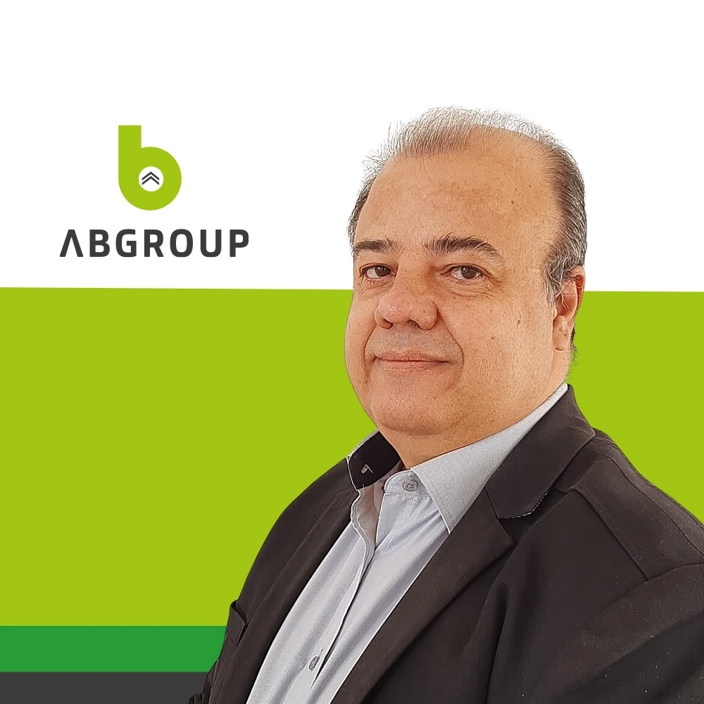
Conheça o instrutorAltamiro BorgesA UND - Universidade da Distribuição é uma instituição de ensino que tem como objetivo difundir o conhecimento, as práticas e ferramentas que ajudam a otimizar sistemas de distribuição dentro de uma cadeia de abastecimento.
A UND capacita profissionais para atuarem como gestores logísticos, contribuindo para o desenvolvimento do setor e para a melhoria da competitividade das empresas.
Conheça a formaçãoAntes de falar sobre soluções, a ABGroup entende o cenário, identifica as dores do seu negócio e constrói uma palestra personalizada para os desafios que sua equipe realmente enfrenta.
Solicite um diagnóstico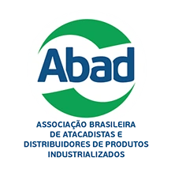
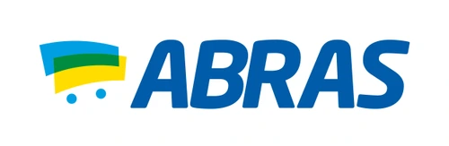
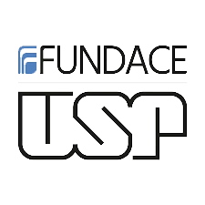
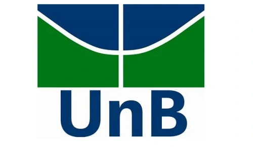
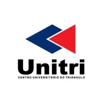
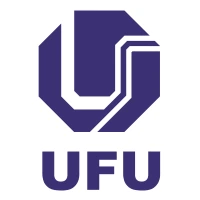
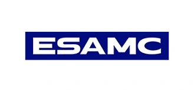
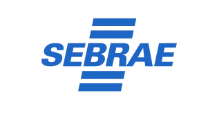
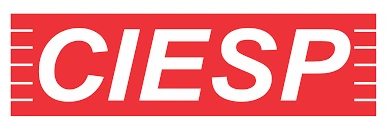
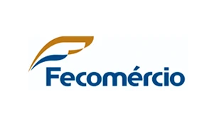
Desenvolva habilidades de liderança na gestão de operações logísticas, otimizando processos e melhorando a eficiência da cadeia de suprimentos.
Ver programa PDFAprenda a planejar e controlar as operações logísticas, integrando diversos elementos da cadeia de suprimentos para um fluxo eficiente de mercadorias.
Ver programa PDFAprenda técnicas essenciais para a operação e gestão de centros de distribuição, focando em armazenamento, manuseio e movimentação de mercadorias.
Ver programa PDFDomine estratégias para o planejamento e controle de estoques, minimizando perdas e maximizando a eficiência operacional.
Ver programa PDFExplore os diferentes modos de transporte e suas aplicações, otimizando rotas e garantindo a entrega eficiente e segura de mercadorias.
Ver programa PDFMelhore a experiência do cliente através de técnicas avançadas de atendimento e gestão de relacionamento, garantindo satisfação e fidelidade.
Ver programa PDFO curso será ministrado por Altamiro Borges, CEO e Fundador do ABGroup Desenvolvimento de Negócios, consultor com mais de 30 anos de experiência na área.
Altamiro é especialista em acelerar os resultados de seus clientes e já treinou mais de 60 mil alunos nas áreas de Negócio e mercado, Supply Chain e Logística, Tecnologia e Inovações.